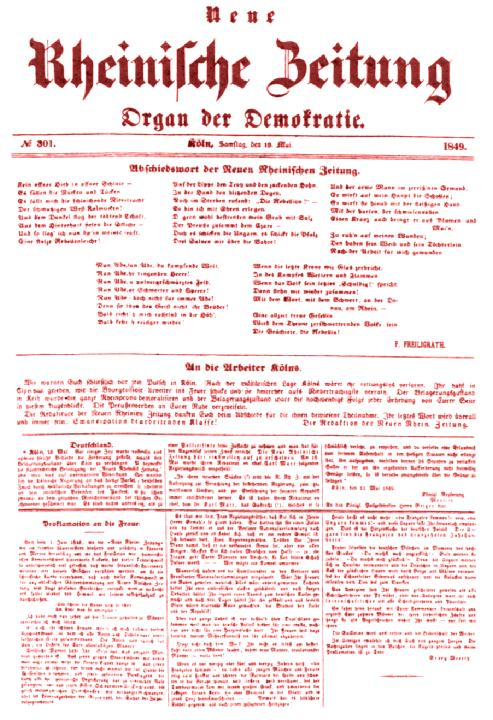

Final Issue Neue Rheinische Zeitung May 1849
Cologne, May 18. Some time ago Berlin demanded that the local authorities reintroduce a state of siege in Cologne. They intended to use martial law to suppress the Neue Rheinische Zeitung, but met with unexpected resistance. The municipal authorities of Cologne then turned to the judiciary here in order to achieve the same purpose by arbitrary arrests. But this failed on account of the legal scruples of the judiciary, just as it had failed twice before on account of the common sense of the Rhenish juries. [168] There was nothing for it but to resort to a Police ruse, and this, for the time being, has achieved its purpose. The Neue Rheinische Zeitung ceases publication for the present. On May 16, its Editor-in-Chief Karl Marx received the following official note:
"The tendency of the Neue Rheinische Zeitung to provoke in its readers
contempt for the present government, and incite them to violent revolutions
and the setting up of a social republic has become stronger in its latest
pieces" (!). "The right of hospitality" (!) "which he so disgracefully
abused, is therefore to be withdrawn from its Editor-in-Chief, Dr. Karl
Marx, and since he has not obtained permission to prolong his stay in these
states he is ordered to leave them within 24 hours. If he should not comply
with this demand, he is to be conveyed across the border. Cologne, May
11, 1849.
Royal Government
Moeller
"(Addressed to) Herr Geiger, Royal Police Director, here."
Why these absurd phrases, these official lies?
The trend and tone of the latest pieces of the Neue Rheinische Zeitung do not differ a whit from its first "trial piece". In that "first piece" we wrote among other things:
"Herr Huser's idea (in Mainz) is but part of the larger plan of the Berlin reactionaries, who would like... to deliver us defenseless... into the hands of the army."
Well, gentlemen, what do you say now?
As to our tendency, did not the government know it? Have we not declared before the jury that it was now "the duty of the press to undermine the whole basis of the existing order"? Regarding the Hohenzollern princeling one can read the following in the issue of October 19, 1848:
"The King is consistent. He would always have been consistent, had not the March days unfortunately interposed that portentous piece of paper between His Majesty and the people. At present His Majesty apparently believes again, as he did prior to the March days, that Slavism has 'feet of iron'; perhaps the people of Vienna is the magician who will turn the iron into clay."
Is that clear, gentlemen?
And the "social republic"? Have we proclaimed it only in the "latest pieces" of the Neue Rheinische Zeitung?
Did we not speak plainly and clearly enough for those dullards who failed to see the "red" thread running through all our comments and reports on the European movement?
The November 7 issue of the Neue Rheinische Zeitung says, "Assuming that arms will enable the counter-revolution to establish itself in the whole of Europe, money would then kill it in the whole of Europe. European bankruptcy, national bankruptcy would be the fate nullifying the victory. Bayonets crumble like tinder when they come into contact with the salient 'economic' facts. But developments will not wait for the bills of exchange drawn by the European states on the new European society to expire.
"The crushing counter-blow of the June revolution will be struck in
Paris. With the victory of the 'red' republic in Paris, armies will be
rushed from the interior of their countries to the frontiers and across
them, and the real strength of the fighting parties will become evident.
We shall then remember this June and this October and we too shall exclaim:
"Vae victis!
"The purposeless massacres perpetrated since the June and October
events, the tedious offering of sacrifices since February and March, the
very cannibalism of the counterrevolution will convince the nations that
there is only one way in which the murderous death agonies of the old society
and the bloody birth throes of the new society can be shortened, simplified
and concentrated, and that way is revolutionary terror."
Is that clear, gentlemen?
From the very beginning we did not consider it necessary to conceal our views. During a polemic with the judiciary here, we told you:
"The real opposition of the Neue Rheinische Zeitung will begin only in the tricolor republic."
And at that time we were speaking with the judiciary. We summed up the old year, 1848, in the following words (cf. the issue of December 31, 1848):
"The history of the Prussian middle class, and that of the German middle class in general between March and December shows that a purely middle-class revolution and the establishment of bourgeois rule in the form of a constitutional monarchy is impossible in Germany, and that the only alternatives are either a feudal absolutist counterrevolution or a social republican revolution."
Did we therefore have to advance our social republican tendency only in the "last pieces" of the Neue Rheinische Zeitung? Did you not read our articles about the June revolution, and was not the essence of the June revolution the essence of our paper?
Why then your hypocritical phrases, your attempt to find an impossible pretext?
We have no compassion and we ask no compassion from you. When our turn comes, we shall not make excuses for the terror. But the royal terrorists, the terrorists by the grace of God and the law, are in practice brutal, disdainful, and mean, in theory cowardly, secretive, and deceitful, and in both respects disreputable.
The Prussian official piece of paper goes even to the absurd length of speaking about the "right of hospitality which was disgracefully abused" by Karl Marx, the Editor-in-Chief of the Neue Rheinische Zeitung.
The right of hospitality which the insolent intruders, the anterior Russians (Borussians), forced upon us, inhabitants of the Rhineland, on our own land — this hospitality was indeed "disgracefully" abused by the Neue Rheinische Zeitung. We believe that we have thereby rendered a service to the Rhine Province. We have saved the revolutionary honor of our homeland. From now on the Neue Preussische Zeitung alone will enjoy the full right of citizenship in the Rhine Province.
In parting we should like to remind our readers of the words printed in the first issue we published in January:
"The table of contents for 1849 reads: Revolutionary rising of the French working class, world war."
And in the East, a revolutionary army made up of fighters of all nationalities already confronts the alliance of the old Europe represented by the Russian army, while from Paris comes the threat of a "red republic".
{kind=link}